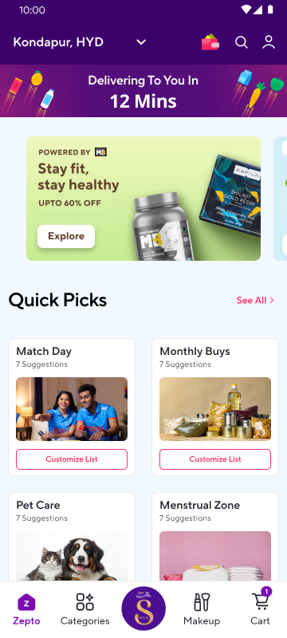
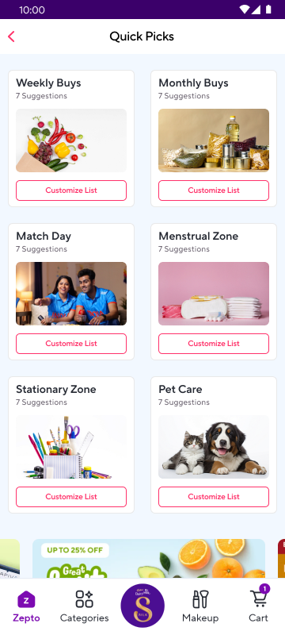
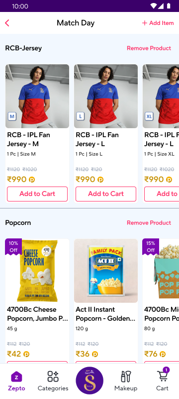
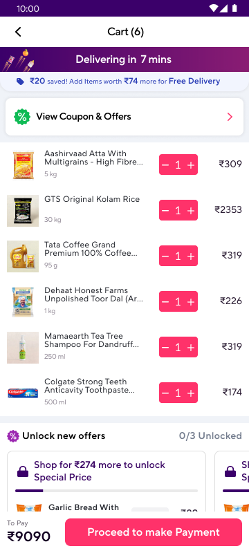
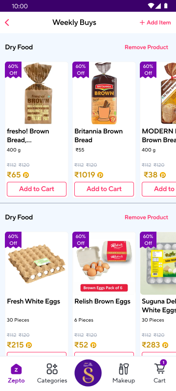
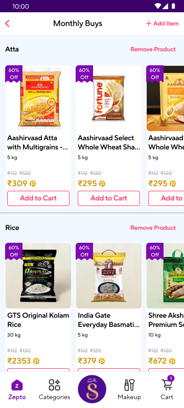
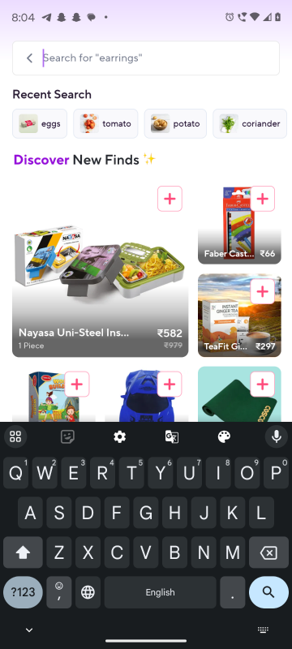
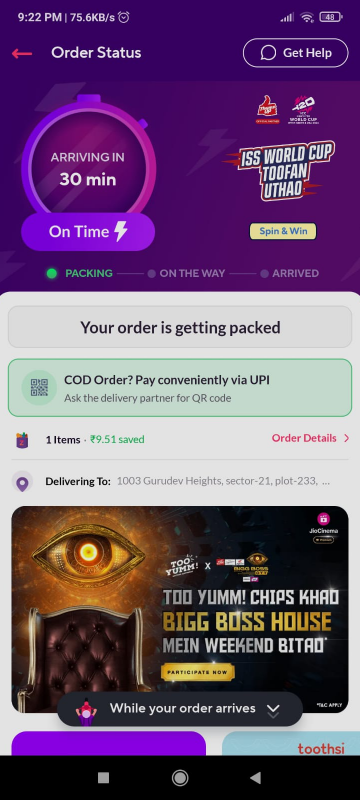

Pre-made, occasion-based shopping lists that let users customise and reorder their groceries in seconds — instead of searching item by item every time.



Zepto delivers in 10 minutes. But every time you open the app to do your weekly grocery run, you start from scratch: searching for bread, then eggs, then atta, then rice — one item at a time. For frequent shoppers who buy the same things week after week, this friction adds up fast.
There was no way to say "give me what I usually buy for the week" — or to quickly stock up for a cricket match night, a monthly pantry refill, or a self-care day. The cart was always empty. The memory was always on the user.
Instead of asking users to remember and search, what if Zepto offered a pre-made list for the occasion — "Weekly Buys", "Monthly Buys", "Match Day", "Menstrual Zone" — curated with the items most people need for that moment? And then let the user customise it: remove what they don't want, add what's missing, and drop it all to cart?
This is "Quick Picks" — a smart pre-list layer built directly into the Zepto home screen, designed to turn routine reordering from a chore into a single tap.
Design approach: The team replicated Zepto's existing design system in Figma — rebuilding its components, grids, and interaction patterns from scratch to understand the constraints before extending them. Quick Picks was designed to feel native to the app, not bolted on.
Three steps. Zero searching.
Home screen shows Quick Picks section with occasion-based categories
Browse all 6 lists — tap any to open and customise
Remove unwanted items, add your own — then add everything to cart

Cart is filled — proceed to payment in one tap
The Quick Picks section lives on the Zepto home screen, directly below the promotional banner. It shows the four most-relevant categories as cards with a cover image, a subtitle ("7 Suggestions"), and a prominent "Customize List" CTA.
Placing it on the home screen — rather than buried in search or a menu — means users encounter it right when they open the app with intent to shop. The "See All" link at the top right opens the full grid of all six lists without cluttering the home.

Each Quick Pick list organises its suggestions into named sub-categories. "Weekly Buys" shows Dry Food (bread options), then another Dry Food row (eggs) — so users can scan by ingredient type, not scroll a flat list of unrelated products.
The "+ Add Item" button in the top-right corner lets users add any product from Zepto's full catalogue to this list, while "Remove Product" next to each sub-category header allows one-tap cleanup of items they never buy. The list is fully theirs once they've personalised it.
The Monthly Buys list targets the once-a-month restocking trip: Atta (multiple wheat flour brands to choose from), Rice (Kolam, Basmati, Premium), and other pantry staples — each surfaced with discounted prices and individual "Add to Cart" buttons.
Users pick their preferred brand within a category rather than seeing a single pre-selected product. This preserves choice while eliminating search — the difference between "here are your options for rice" vs. "find rice yourself." The sub-category structure works equally well for Match Day (jerseys + snacks), Menstrual Zone, and Stationary.

From concept to clickable prototype — three key stages.

Add Item search — how users extend a Quick Pick list with items not already suggested. Recent searches surface frequently added items.
Match Day with jersey sizes (M/L/XL) and popcorn options — occasion-specific items surfaced with variant selection and individual Add to Cart.
Six lists in a clean 2-column grid — each with a contextual cover image and "Customize List" CTA. Tapping "See All" from home lands here.
Grouping items by type (Dry Food, Rice, Atta) lets users jump to what they need instantly rather than scrolling a mixed list. It mirrors how people actually think about grocery shopping.
Instead of "add everything at once," each item has its own Add to Cart button. Users pick the brand and variant they prefer without leaving the list or starting a search.
If you don't buy popcorn, you shouldn't have to remove each popcorn variant one-by-one. "Remove Product" at the category header removes the whole group in one tap.
"Match Day" triggers recall of what you need for the evening — jerseys, snacks, drinks. "Dry Food" does not. Naming by occasion makes the list feel personally relevant before it's even opened.
The prototype covers the complete journey: Quick Picks → Customise → Cart → Confirming Order loading state → Order Status screen with live packing progress and delivery ETA.
The "Confirming Order" modal reassures users the system is working ("This might take up to a minute. Please do not close the app."). The Order Status screen then shows a real-time progress bar (Packing → On the Way → Arrived) with a 30-min ETA — matching the Zepto experience users already know and trust.

Studied Zepto's existing UX patterns, interaction models, and design language to understand the constraints before adding to them.
Rebuilt Zepto's UI components in Figma from scratch — replicating screens pixel-perfect to learn the system from the inside out.
Designed the Quick Picks feature end-to-end: home placement, category grid, individual list screens, search, cart, and order confirmation.
Built a fully clickable prototype in Figma connecting the complete flow from the home screen to order status.
Explore the complete clickable flow — from Quick Picks to order placed.